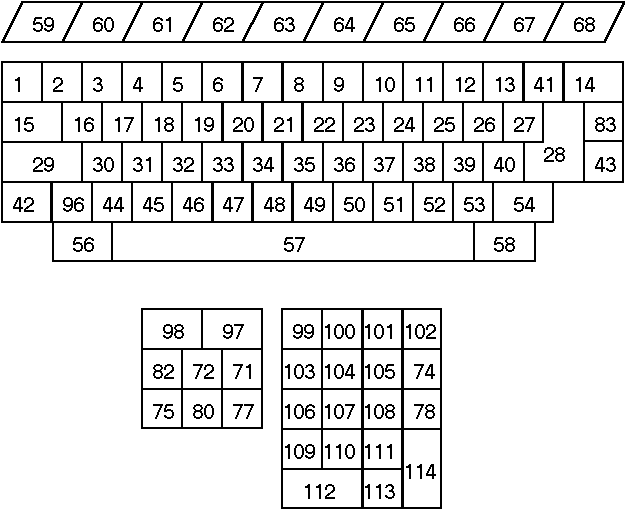

Previous
Next
TOC
Die einfachste Reparaturmöglichkeit im Falle einer scharf geknick-
ten Folie oder einer unterbrochenen
Leiterbahn heißt Silberleitlack
und ist erhältlich in eigentlich jedem Fachgeschäft für Bastel- und
Hobbybedarf. Eine recht günstige 2 Fläschlein Packung (für knappe
10.- DM enthält es je eine Flasche Silberleitlack auf Xylol Basis
und eine Flasche Verdünner) gibt es von der Firma Busch unter der
Bestellnummer 5900 und ist im Modellbahnfachhandel erhältlich.
Und noch eine Hilfe für die Lokalisierung der Fehlerstelle:
Wenn man die Folie ausgebaut hat und von CTRL-Taste die Bahn nach
oben verfolgt, siehst man eine winzige Unterbrechung. Ungefähr in
der Nähe der ESC- bzw. F1-Taste. Da ist eine Kante im Tastaturge-
häuse, die die Folie dort durchwetzt oder die Unterbrechung liegt
etwas daneben und da ist dann keine Kunststoffkante vorhanden.
Es klappt auch an Knickstellen ganz gut. :-)
Leitlack drauf und die Folie gleich wieder in den benötigten
"Knickwinkel" zurückbiegen und zum Austrocknen fixieren.
Damit der Knick nicht noch enger wird oder scheuert, klebt man
einfach oben und unten einen Streifen Gewebeklebeband auf die Folie.
Und gut austrocknen lassen über NACHT ist nicht verkehrt!
Der Scancode der Atari Tastaturen

weiterblättern
Kapitel Die Übersicht der Tastaturen, Seite 2